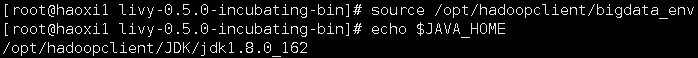
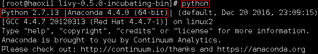
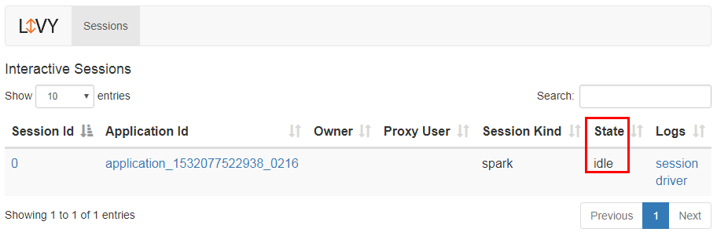
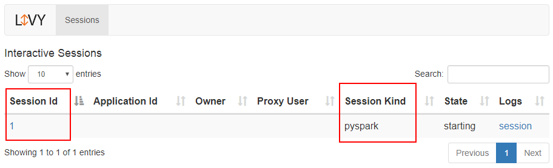

Apache Livy对接FusionInsight¶
适用场景¶
Apache Livy 0.5.0-incubating ↔ FusionInsight HD V100R002C80SPC200 (Spark2.x)
安装Livy¶
操作场景¶
安装 Apache Livy 0.5.0
前提条件¶
- 已完成FusionInsight HD和客户端的安装。
操作步骤¶
- 安装Apache Livy 0.5.0-incubating，在网址
https://livy.incubator.apache.org/download/下载安装包，使用WinSCP导入主机并用unzip livy-0.5.0-incubating-bin.zip解压生成livy-0.5.0-incubating-bin目录

- 执行source命令到客户端，获取java配置信息
source /opt/hadoopclient/bigdata_env echo $JAVA_HOME

-
根据产品文档创建用户developuser，并赋予足够权限，下载用户developuser的keytab文件user.keytab，上传至
/opt/developuser目录下 -
在
/usr/livy/livy-0.5.0-incubating-bin/conf路径下新建livy的认证文件jaas.conf，内容如下:Client { com.sun.security.auth.module.Krb5LoginModule required useKeyTab=true keyTab="/opt/developuser/user.keytab" principal="developuser" useTicketCache=false storeKey=true debug=true; };其中用户为在FusionInsight Manager中创建的developuser用户，将developuser的keytab文件user.key放在/opt/developuser/目录下
-
配置Livy环境变量，在profile文件中加入如下变量
vi /etc/profile export LIVY_HOME=/usr/livy/livy-0.5.0-incubating-bin export PATH=$LIVY_HOME/bin:$PATH
-
编辑livy.conf文件，位置
/usr/livy/livy-0.5.0-incubating-bin/conf
cd /usr/livy/livy-0.5.0-incubating-bin/conf cp livy.conf.template livy.conf vi livy.conf
加入如下内容：
livy.spark.master = yarn livy.spark.deploy-mode = client livy.server.session.timeout = 1h livy.impersonation.enabled = true livy.repl.enable-hive-context = true #livy.server.auth.type=kerberos livy.server.auth.kerberos.keytab=/opt/developuser/user.keytab livy.server.auth.kerberos.principal=developuser@HADOOP.COM livy.server.launch.kerberos.keytab=/opt/developuser/user.keytab livy.server.launch.kerberos.principal=developuser@HADOOP.COM
- 编辑livy-client.conf文件，位置
/usr/livy/livy-0.5.0-incubating-bin/conf
cd /usr/livy/livy-0.5.0-incubating-bin/conf cp livy-client.conf.template livy-client.conf vi livy-client.conf
加入如本机ip地址：
livy.rsc.rpc.server.address =172.16.52.190
/usr/livy/livy-0.5.0-incubating-bin/conf
cd /usr/livy/livy-0.5.0-incubating-bin/conf cp livy-env.sh.template livy-env.sh vi livy-env.sh
export JAVA_HOME=/opt/hadoopclient/JDK/jdk1.8.0_162 export SPARK_HOME=/opt/hadoopclient/Spark2x/spark export SPARK_CONF_DIR=/opt/hadoopclient/Spark2x/spark/conf export HADOOP_CONF_DIR=/opt/hadoopclient/HDFS/hadoop/etc/hadoop export LIVY_SERVER_JAVA_OPTS="-Djava.security.krb5.conf=/opt/developuser/krb5.conf -Djava.security.auth.login.config=/usr/livy/livy-0.5.0-incubating-bin/conf/jaas.conf -Dzookeeper.server.principal=zookeeper/hadoop.hadoop.com -Dzookeeper.request.timeout=12000" export SPARK_LOCAL_IP=172.16.52.190
- 编辑spark-blacklist.conf文件，位置
/usr/livy/livy-0.5.0-incubating-bin/confcd /usr/livy/livy-0.5.0-incubating-bin/conf cp spark-blacklist.conf.template spark-blacklist.conf vi spark-blacklist.conf
注销掉如下内容：
spark.master spark.submit.deployMode

- 启动和停止Livy，在路径
/usr/livy/livy-0.5.0-incubating-bin下
bin/livy-server start

启动成功后可以在http://172.16.52.190:8998访问到Livy服务器：

测试运行Livy样例代码¶
操作场景¶
测试运行Livy样例代码，包括Spark Shell，PySpark，SparkR
样例代码参考网址https://livy.incubator.apache.org/examples/
前提条件¶
- 已完成FusionInsight HD和客户端的安装。
- 已完成Anaconda和R在客户端主机上的安装。
若没有安装Anaconda和R，请参考Zeppelin0.8.0对接FusionInsight HD V100R002C80SPC200 (Spark2.x)指导文档中连接Spark和SparkR部分相关内容
运行Spark样例操作步骤¶
- 输入命令
python启动Anaconda

- 输入如下python代码启动一个Livy session
import json, pprint, requests, textwrap host = 'http://172.16.52.190:8998' data = {'kind': 'spark'} headers = {'Content-Type': 'application/json'} r = requests.post(host + '/sessions', data=json.dumps(data), headers=headers)


- 当一个session完成启动后， 它将会变为闲置状态
session_url = host + r.headers['location'] r = requests.get(session_url, headers=headers) r.json()

- 下面通过传递一个简单JSON命令行的方式来执行Scala
statements_url = session_url + '/statements' data = {'code': '1 + 1'} r = requests.post(statements_url, data=json.dumps(data), headers=headers) r.json() statement_url = host + r.headers['location'] r = requests.get(statement_url, headers=headers) pprint.pprint(r.json())
可以在Session0状态栏看到之前运行的样例代码以及结果

也可以在终端看到以JSON格式返回的结果

- 更新Scala再次运行
data = { 'code': textwrap.dedent(""" val NUM_SAMPLES = 100000; val count = sc.parallelize(1 to NUM_SAMPLES).map { i => val x = Math.random(); val y = Math.random(); if (x*x + y*y < 1) 1 else 0 }.reduce(_ + _); println(\"Pi is roughly \" + 4.0 * count / NUM_SAMPLES) """) } r = requests.post(statements_url, data=json.dumps(data), headers=headers) pprint.pprint(r.json()) statement_url = host + r.headers['location'] r = requests.get(statement_url, headers=headers) pprint.pprint(r.json())
可以在Session0状态栏看到之前运行的样例代码以及结果

- 关闭session0
session_url = 'http://172.16.52.190:8998/sessions/0' requests.delete(session_url, headers=headers)
运行PySpark样例操作步骤¶
- 继续接着上面的步骤，更改类型为pyspark
可以在Session状态栏看到新启动的Session1
data = {'kind': 'pyspark'} r = requests.post(host + '/sessions', data=json.dumps(data), headers=headers) r.json()

- 通过传递JSON命令的方式执行Python样例代码，注意要更改statements_url
data = { 'code': textwrap.dedent(""" import random NUM_SAMPLES = 100000 def sample(p): x, y = random.random(), random.random() return 1 if x*x + y*y < 1 else 0 count = sc.parallelize(xrange(0, NUM_SAMPLES)).map(sample).reduce(lambda a, b: a + b) print "Pi is roughly %f" % (4.0 * count / NUM_SAMPLES) """) } statements_url = 'http://172.16.52.190:8998/sessions/1/statements' r = requests.post(statements_url, data=json.dumps(data), headers=headers) pprint.pprint(r.json())
可以在Session1状态栏看到之前运行的样例代码以及结果

- 关闭session1
session_url = 'http://172.16.52.190:8998/sessions/1' requests.delete(session_url, headers=headers)
运行SparkR样例操作步骤¶
- 继续接着上面的步骤，更改类型为sparkr
data = {'kind': 'sparkr'} r = requests.post(host + '/sessions', data=json.dumps(data), headers=headers) r.json()
可以在Session状态栏看到新启动的Session2

- 通过传递JSON命令的方式执行R样例代码，注意要更改statements_url
data = { 'code': textwrap.dedent(""" hello <- function( name ) { sprintf( "Hello, %s", name ); } hello("livy") """) } statements_url = 'http://172.16.52.190:8998/sessions/2/statements' r = requests.post(statements_url, data=json.dumps(data), headers=headers) pprint.pprint(r.json())
可以在Session2状态栏看到之前运行的样例代码以及结果

- 关闭session2
session_url = 'http://172.16.52.190:8998/sessions/2' requests.delete(session_url, headers=headers)